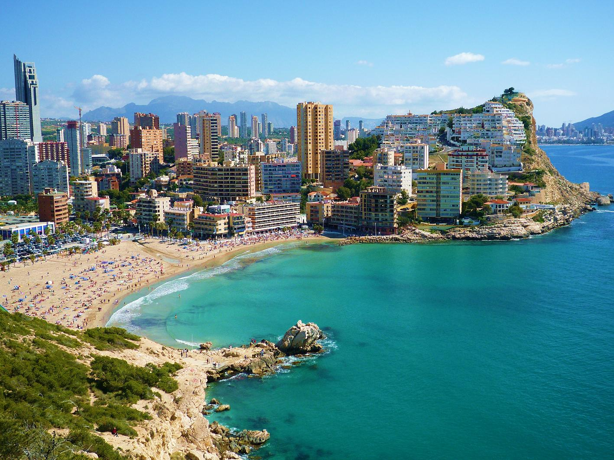

R E I S E Z I E L E
Costa Rica
Costa Rica ist ein zentralamerikanisches Land, das im Norden an Nicaragua, im Süden an Panama,
im Osten an das Karibische Meer und im Westen an den Pazifischen Ozean grenzt.
Mit einer Bevölkerung von rund 5 Millionen Menschen ist es bekannt für seine reiche Biodiversität, seine fortschrittlichen Umweltschutzmaßnahmen und seinen hochwertigen Kaffee.
Spanien
Spanien, ein Land im Südwesten Europas, nimmt den größten Teil der Iberischen Halbinsel ein und grenzt im Norden an Frankreich und im Westen an Portugal.
Mit einer Bevölkerung von etwa 47 Millionen Menschen ist es für seine reiche Geschichte, Kultur und als Geburtsort des Flamencos bekannt.
Südkorea

Südkorea liegt in Ostasien und nimmt den südlichen Teil der Koreanischen Halbinsel ein, grenzend an Nordkorea im Norden. Mit einer Bevölkerung von rund 51 Millionen Menschen
ist es ein technologisches und kulturelles Zentrum, bekannt für seine moderne Industrie, K-Pop und traditionelle Feste.